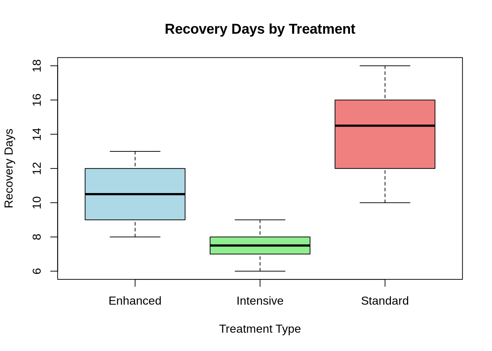

# Assign the value 5 to an object called 'x'
x <- 5
# View the value of x
x[1] 5# You can also use = for assignment, but <- is preferred in R
y <- 10
y[1] 10Dr. Joshua Lambert
Download R Code for this Lecture
Welcome to R! This guide will help you get started with R and RStudio, even if you have no prior programming experience. R is a powerful, free statistical software that is widely used in research, including nursing and healthcare.
R offers several advantages for nursing research:
You’ll need to install two programs: R (the statistical software) and RStudio (a user-friendly interface for R).
💡 R Tip: Always install R before RStudio. RStudio needs R to be installed first to work properly.
When you open RStudio, you’ll see four main panes:
💡 R Tip: You can customize the pane layout in Tools → Global Options → Pane Layout.
In R, we use <- to assign values to objects (variables):
[1] 5[1] 10💡 R Tip: The keyboard shortcut for
<-is Alt + - (Windows) or Option + - (Mac).
R has several basic data types:
[1] "numeric"[1] "character"[1] "logical"Vectors are collections of values of the same type. We create them using c() (combine):
[1] 25 34 45 56 67[1] "Placebo" "Drug A" "Drug B" "Placebo" "Drug A" [1] 25[1] 45[1] 25 45 67💡 R Tip: R uses 1-based indexing, meaning the first element is at position 1 (not 0 like some other languages).
Data frames are like spreadsheets - they have rows and columns. This is how we typically work with data in R:
patient_id age treatment outcome
1 1 25 Placebo 5.2
2 2 34 Drug A 6.8
3 3 45 Drug B 7.1
4 4 56 Placebo 5.5
5 5 67 Drug A 6.9'data.frame': 5 obs. of 4 variables:
$ patient_id: num 1 2 3 4 5
$ age : num 25 34 45 56 67
$ treatment : chr "Placebo" "Drug A" "Drug B" "Placebo" ...
$ outcome : num 5.2 6.8 7.1 5.5 6.9 patient_id age treatment outcome
1 1 25 Placebo 5.2
2 2 34 Drug A 6.8
3 3 45 Drug B 7.1
4 4 56 Placebo 5.5
5 5 67 Drug A 6.9[1] 25 34 45 56 67[1] "Placebo" "Drug A" "Drug B" "Placebo" "Drug A" [1] "Drug A"Functions perform operations. They have a name followed by parentheses containing arguments:
[1] 45.4[1] 16.772[1] 45 Min. 1st Qu. Median Mean 3rd Qu. Max.
25.0 34.0 45.0 45.4 56.0 67.0 [1] 5treatments
Drug A Drug B Placebo
2 1 2 💡 R Tip: To learn about any function, type
?function_namein the console (e.g.,?mean).
The working directory is where R looks for files and saves output:
💡 R Tip: Use forward slashes
/in file paths, even on Windows. Or use double backslashes\\.
CSV (Comma-Separated Values) files are common for data storage. There are three main ways to read them:
Best for reproducibility (your script will always know where to look).
Useful if you don’t know the exact path or want to “browse” for the file.
💡 R Tip:
file.choose()is great for beginners, but for formal research, typing the path (Method 1) is better because it makes your work “reproducible” - anyone can run your script without having to click through windows.
The easiest way for beginners. RStudio has a built-in “point-and-click” importer:
💡 R Tip: When you use the Import Tool, RStudio actually runs the
read.csv()orread_excel()code in the console. You should copy that code and paste it into your script so you can re-run it later!
Once imported, always check your data:
To read Excel files, you need the readxl package:
patient_id age
1 1 25
2 2 34
3 3 45
4 4 56
5 5 67
6 6 23
7 7 45
8 8 56
9 9 78
10 10 34 patient_id age treatment outcome
3 3 45 Placebo 7.1
4 4 56 Drug A 5.5
5 5 67 Placebo 6.9
7 7 45 Placebo 7.2
8 8 56 Drug A 6.5
9 9 78 Placebo 7.8 patient_id age treatment outcome
3 3 45 Placebo 7.1
4 4 56 Drug A 5.5
5 5 67 Placebo 6.9
7 7 45 Placebo 7.2
8 8 56 Drug A 6.5
9 9 78 Placebo 7.8 patient_id age outcome
3 3 45 7.1
4 4 56 5.5
5 5 67 6.9
7 7 45 7.2
8 8 56 6.5
9 9 78 7.8 patient_id age treatment outcome age_group
1 1 25 Placebo 5.2 Younger
2 2 34 Drug A 6.8 Younger
3 3 45 Placebo 7.1 Younger
4 4 56 Drug A 5.5 Older
5 5 67 Placebo 6.9 Older
6 6 23 Drug A 5.0 Younger
7 7 45 Placebo 7.2 Younger
8 8 56 Drug A 6.5 Older
9 9 78 Placebo 7.8 Older
10 10 34 Drug A 6.2 Younger patient_id age treatment outcome age_group outcome_doubled
1 1 25 Placebo 5.2 Younger 10.4
2 2 34 Drug A 6.8 Younger 13.6
3 3 45 Placebo 7.1 Younger 14.2
4 4 56 Drug A 5.5 Older 11.0
5 5 67 Placebo 6.9 Older 13.8
6 6 23 Drug A 5.0 Younger 10.0
7 7 45 Placebo 7.2 Younger 14.4
8 8 56 Drug A 6.5 Older 13.0
9 9 78 Placebo 7.8 Older 15.6
10 10 34 Drug A 6.2 Younger 12.4 patient_id age treatment outcome age_group outcome_doubled log_outcome
1 1 25 Placebo 5.2 Younger 10.4 1.648659
2 2 34 Drug A 6.8 Younger 13.6 1.916923
3 3 45 Placebo 7.1 Younger 14.2 1.960095
4 4 56 Drug A 5.5 Older 11.0 1.704748
5 5 67 Placebo 6.9 Older 13.8 1.931521
6 6 23 Drug A 5.0 Younger 10.0 1.609438
outcome_z
1 -1.3142022
2 0.4093417
3 0.7325061
4 -0.9910377
5 0.5170632
6 -1.5296452Packages are collections of functions that extend R’s capabilities. Think of them as apps for R.
💡 R Tip: You only need to install a package once, but you need to load it with
library()every time you start a new R session.
Don’t panic when you see errors! They’re R’s way of telling you something needs fixing.
Common errors:
# Error: object not found
print(my_variable)
# Fix: Make sure you've created the object and spelled it correctly
# Error: could not find function
myfunction()
# Fix: Check spelling, or load the package that contains the function
# Error: unexpected symbol
x < - 5 # Space in assignment operator
# Fix: Remove the space: x <- 5# ============================================
# Project: Blood Pressure Study
# Author: Your Name
# Date: 2026-01-05
# ============================================
# Load packages
library(ggplot2)
library(car)
# Read data
bp_data <- read.csv("blood_pressure.csv")
# Data cleaning
# ... your code ...
# Analysis
# ... your code ...
# Visualization
# ... your code ....R extensionLet’s put it all together with a complete example:
# ============================================
# Example: Analyzing Patient Recovery Times
# ============================================
# Step 1: Create sample data (normally you'd read this from a file)
recovery_data <- data.frame(
patient_id = 1:30,
age = c(45, 52, 38, 61, 49, 55, 42, 58, 47, 53,
39, 44, 56, 50, 43, 59, 48, 51, 46, 54,
41, 57, 62, 40, 60, 37, 63, 36, 64, 35),
treatment = rep(c("Standard", "Enhanced", "Intensive"), each = 10),
recovery_days = c(12, 15, 10, 18, 14, 16, 11, 17, 13, 15,
9, 11, 8, 12, 10, 13, 9, 11, 10, 12,
7, 9, 6, 8, 7, 9, 6, 8, 7, 8)
)
# Step 2: Examine the data
print("First few rows:")[1] "First few rows:" patient_id age treatment recovery_days
1 1 45 Standard 12
2 2 52 Standard 15
3 3 38 Standard 10
4 4 61 Standard 18
5 5 49 Standard 14
6 6 55 Standard 16[1] "\nData structure:"'data.frame': 30 obs. of 4 variables:
$ patient_id : int 1 2 3 4 5 6 7 8 9 10 ...
$ age : num 45 52 38 61 49 55 42 58 47 53 ...
$ treatment : chr "Standard" "Standard" "Standard" "Standard" ...
$ recovery_days: num 12 15 10 18 14 16 11 17 13 15 ...[1] "\nSummary statistics:" patient_id age treatment recovery_days
Min. : 1.00 Min. :35.00 Length:30 Min. : 6.00
1st Qu.: 8.25 1st Qu.:42.25 Class :character 1st Qu.: 8.00
Median :15.50 Median :49.50 Mode :character Median :10.00
Mean :15.50 Mean :49.50 Mean :10.70
3rd Qu.:22.75 3rd Qu.:56.75 3rd Qu.:12.75
Max. :30.00 Max. :64.00 Max. :18.00 [1] "\nMean recovery days by treatment:" Enhanced Intensive Standard
10.5 7.5 14.1 [1] "\nStandard deviation by treatment:" Enhanced Intensive Standard
1.581139 1.080123 2.601282 # Step 4: Create a new variable (age group)
recovery_data$age_group <- ifelse(recovery_data$age >= 50, "50+", "Under 50")
# Step 5: Create a simple visualization
boxplot(recovery_days ~ treatment,
data = recovery_data,
main = "Recovery Days by Treatment",
xlab = "Treatment Type",
ylab = "Recovery Days",
col = c("lightblue", "lightgreen", "lightcoral"))
# For more advanced visualizations, see the [Graphing Your Data](graphing-your-data.qmd) lecture.
# Step 6: Basic statistical test (we'll learn more about this later)
# ANOVA to test if recovery days differ by treatment
# Learn more in the [Introduction to ANOVA](introduction-to-anova.qmd) lecture.
anova_result <- aov(recovery_days ~ treatment, data = recovery_data)
print("\nANOVA Results:")[1] "\nANOVA Results:" Df Sum Sq Mean Sq F value Pr(>F)
treatment 2 218.4 109.20 31.4 9e-08 ***
Residuals 27 93.9 3.48
---
Signif. codes: 0 '***' 0.001 '**' 0.01 '*' 0.05 '.' 0.1 ' ' 1You now know how to:
✅ Install R and RStudio
✅ Navigate the RStudio interface
✅ Understand basic R syntax and data types
✅ Create and manipulate vectors and data frames
✅ Read data from CSV and Excel files
✅ Perform basic data manipulation
✅ Install and load packages
✅ Get help when you need it
✅ Follow best practices for reproducible research
Now that you’re familiar with R basics, you’re ready to move on to the statistical methods covered in this course. Each lecture will build on these foundations, showing you how to use R for specific analyses.
💡 R Tip: Don’t try to memorize everything! Keep this guide handy as a reference. The more you practice, the more natural R will become.
Happy coding! 🎉
---
title: "Getting Started with R"
author: "Dr. Joshua Lambert"
format:
html:
toc: true
toc-title: "Table of Contents"
code-fold: false
code-tools: true
css: ../styles.css
---
[**Download R Code for this Lecture**](code/getting-started-with-r.R){ .btn .btn-primary }
# Getting Started with R
Welcome to R! This guide will help you get started with R and RStudio, even if you have no prior programming experience. R is a powerful, free statistical software that is widely used in research, including nursing and healthcare.
## Why R?
R offers several advantages for nursing research:
- **Free and Open Source**: No licensing fees, available to everyone
- **Powerful**: Can handle simple to complex statistical analyses
- **Reproducible**: Your analysis is documented in code, making it easy to replicate
- **Widely Used**: Large community of users and extensive online resources
- **Flexible**: Can create publication-quality graphics and reports
## Installing R and RStudio
You'll need to install two programs: R (the statistical software) and RStudio (a user-friendly interface for R).
### Step 1: Install R
1. Go to [https://cran.r-project.org/](https://cran.r-project.org/)
2. Click on the download link for your operating system:
- **Windows**: Click "Download R for Windows" → "base" → Download the latest version
- **Mac**: Click "Download R for macOS" → Download the appropriate version for your Mac
3. Run the installer and follow the default installation options
### Step 2: Install RStudio
1. Go to [https://posit.co/download/rstudio-desktop/](https://posit.co/download/rstudio-desktop/)
2. Click "Download RStudio Desktop" (the free version)
3. Run the installer and follow the default installation options
> **💡 R Tip**: Always install R *before* RStudio. RStudio needs R to be installed first to work properly.
## Understanding the RStudio Interface
When you open RStudio, you'll see four main panes:
### 1. Script Editor (Top Left)
- Where you write and save your R code
- Create a new script: File → New File → R Script
- Save your work here for future use
### 2. Console (Bottom Left)
- Where R executes commands and displays results
- You can type commands directly here, but they won't be saved
- Output and messages appear here
### 3. Environment/History (Top Right)
- **Environment**: Shows all objects (data, variables) currently in memory
- **History**: Shows all commands you've run
### 4. Files/Plots/Packages/Help (Bottom Right)
- **Files**: Browse files on your computer
- **Plots**: View graphs and visualizations
- **Packages**: Manage R packages (extensions)
- **Help**: Access documentation
> **💡 R Tip**: You can customize the pane layout in Tools → Global Options → Pane Layout.
## R Basics
### The Assignment Operator
In R, we use `<-` to assign values to objects (variables):
```{r}
# Assign the value 5 to an object called 'x'
x <- 5
# View the value of x
x
# You can also use = for assignment, but <- is preferred in R
y <- 10
y
```
> **💡 R Tip**: The keyboard shortcut for `<-` is Alt + - (Windows) or Option + - (Mac).
### Data Types
R has several basic data types:
```{r}
# Numeric (numbers)
age <- 45
weight <- 68.5
# Character (text - always in quotes)
name <- "Patient A"
diagnosis <- "Hypertension"
# Logical (TRUE or FALSE)
is_smoker <- TRUE
has_diabetes <- FALSE
# Check the type of an object
class(age)
class(name)
class(is_smoker)
```
### Vectors
Vectors are collections of values of the same type. We create them using `c()` (combine):
```{r}
# Numeric vector
ages <- c(25, 34, 45, 56, 67)
ages
# Character vector
treatments <- c("Placebo", "Drug A", "Drug B", "Placebo", "Drug A")
treatments
# Access individual elements using brackets []
ages[1] # First element
ages[3] # Third element
# Access multiple elements
ages[c(1, 3, 5)] # First, third, and fifth elements
```
> **💡 R Tip**: R uses 1-based indexing, meaning the first element is at position 1 (not 0 like some other languages).
### Data Frames
Data frames are like spreadsheets - they have rows and columns. This is how we typically work with data in R:
```{r}
# Create a simple data frame
patient_data <- data.frame(
patient_id = c(1, 2, 3, 4, 5),
age = c(25, 34, 45, 56, 67),
treatment = c("Placebo", "Drug A", "Drug B", "Placebo", "Drug A"),
outcome = c(5.2, 6.8, 7.1, 5.5, 6.9)
)
# View the data frame
patient_data
# View structure of the data frame
str(patient_data)
# View first few rows
head(patient_data)
# Access a column using $
patient_data$age
# Access a column using brackets
patient_data[, "treatment"]
# Access a specific cell [row, column]
patient_data[2, 3] # Row 2, Column 3
```
### Functions
Functions perform operations. They have a name followed by parentheses containing arguments:
```{r}
# Calculate mean (average)
mean(ages)
# Calculate standard deviation
sd(ages)
# Calculate median
median(ages)
# Summary statistics
summary(ages)
# Count number of elements
length(ages)
# Create a table of frequencies
table(treatments)
```
> **💡 R Tip**: To learn about any function, type `?function_name` in the console (e.g., `?mean`).
## Working with Data
### Setting Your Working Directory
The working directory is where R looks for files and saves output:
```{r, eval=FALSE}
# Check current working directory
getwd()
# Set working directory (use your own path)
setwd("C:/Users/YourName/Documents/R_Projects")
# Or use Session → Set Working Directory → Choose Directory in RStudio
```
> **💡 R Tip**: Use forward slashes `/` in file paths, even on Windows. Or use double backslashes `\\`.
### Reading Data from CSV Files
CSV (Comma-Separated Values) files are common for data storage. There are three main ways to read them:
#### 1. Direct File Path
Best for reproducibility (your script will always know where to look).
```{r, eval=FALSE}
# Read a CSV file by providing the path
my_data <- read.csv("data/patient_data.csv")
```
#### 2. Interactive Selection (file.choose)
Useful if you don't know the exact path or want to "browse" for the file.
```{r, eval=FALSE}
# This will open a window for you to select the file manually
my_data <- read.csv(file.choose())
```
> **💡 R Tip**: `file.choose()` is great for beginners, but for formal research, typing the path (Method 1) is better because it makes your work "reproducible" - anyone can run your script without having to click through windows.
#### 3. RStudio "Import Dataset" Tool
The easiest way for beginners. RStudio has a built-in "point-and-click" importer:
1. In the **Environment** pane (top right), click **Import Dataset**.
2. Select **From Text (base)...** (for CSV) or **From Excel...**.
3. Browse to your file.
4. Preview the data and check the options (e.g., Heading, Separator).
5. Click **Import**.
> **💡 R Tip**: When you use the Import Tool, RStudio actually runs the `read.csv()` or `read_excel()` code in the console. You should copy that code and paste it into your script so you can re-run it later!
#### Examining the Data
Once imported, always check your data:
```{r, eval=FALSE}
# View the first few rows
head(my_data)
# View the structure (variable names and types)
str(my_data)
# View the entire dataset in a spreadsheet-like viewer
View(my_data)
```
### Reading Data from Excel Files
To read Excel files, you need the `readxl` package:
```{r, eval=FALSE}
# Install the package (only needed once)
install.packages("readxl")
# Load the package (needed each session)
library(readxl)
# Read an Excel file
my_data <- read_excel("data_file.xlsx")
# Read a specific sheet
my_data <- read_excel("data_file.xlsx", sheet = "Sheet1")
```
## Basic Data Manipulation
### Subsetting Data
```{r}
# Create example data
patient_data <- data.frame(
patient_id = 1:10,
age = c(25, 34, 45, 56, 67, 23, 45, 56, 78, 34),
treatment = rep(c("Placebo", "Drug A"), 5),
outcome = c(5.2, 6.8, 7.1, 5.5, 6.9, 5.0, 7.2, 6.5, 7.8, 6.2)
)
# Select specific columns
patient_data[, c("patient_id", "age")]
# Select rows where age > 40
patient_data[patient_data$age > 40, ]
# Using subset() function (easier to read)
subset(patient_data, age > 40)
# Select specific columns for subset
subset(patient_data, age > 40, select = c(patient_id, age, outcome))
```
### Creating New Variables
```{r}
# Add a new column
patient_data$age_group <- ifelse(patient_data$age >= 50, "Older", "Younger")
# View the updated data
patient_data
# Create a new variable based on calculations
patient_data$outcome_doubled <- patient_data$outcome * 2
patient_data
```
### Basic Transformations
```{r}
# Log transformation
patient_data$log_outcome <- log(patient_data$outcome)
# Standardization (z-scores)
patient_data$outcome_z <- scale(patient_data$outcome)
# View results
head(patient_data)
```
## R Packages
Packages are collections of functions that extend R's capabilities. Think of them as apps for R.
### Installing Packages
```{r, eval=FALSE}
# Install a package (only needed once)
install.packages("ggplot2")
# Install multiple packages at once
install.packages(c("ggplot2", "dplyr", "car"))
```
### Loading Packages
```{r, eval=FALSE}
# Load a package (needed each time you start R)
library(ggplot2)
# Alternative way to load
require(ggplot2)
```
### Commonly Used Packages in This Course
- **ggplot2**: Advanced data visualization
- **car**: Companion to Applied Regression (for ANOVA/regression diagnostics)
- **ez**: Easy analysis and visualization of factorial experiments
- **pwr**: Power analysis
- **readxl**: Reading Excel files
- **tidyr**: Data reshaping and tidying
> **💡 R Tip**: You only need to install a package once, but you need to load it with `library()` every time you start a new R session.
## Getting Help
### Built-in Help
```{r, eval=FALSE}
# Get help on a function
?mean
help(mean)
# Search for help on a topic
??regression
# Get examples of how to use a function
example(mean)
```
### Understanding Error Messages
Don't panic when you see errors! They're R's way of telling you something needs fixing.
**Common errors:**
```{r, eval=FALSE}
# Error: object not found
print(my_variable)
# Fix: Make sure you've created the object and spelled it correctly
# Error: could not find function
myfunction()
# Fix: Check spelling, or load the package that contains the function
# Error: unexpected symbol
x < - 5 # Space in assignment operator
# Fix: Remove the space: x <- 5
```
### Online Resources
- **RStudio Cheat Sheets**: [https://posit.co/resources/cheatsheets/](https://posit.co/resources/cheatsheets/)
- **Stack Overflow**: Search for R questions and answers
- **R Documentation**: [https://www.rdocumentation.org/](https://www.rdocumentation.org/)
- **Quick-R**: [https://www.statmethods.net/](https://www.statmethods.net/)
## Best Practices
### 1. Comment Your Code
Use `#` to add comments explaining what your code does:
```{r}
# Calculate the mean age of patients
mean_age <- mean(patient_data$age)
# This is a comment - R ignores everything after #
```
### 2. Use Meaningful Names
```{r, eval=FALSE}
# Good
patient_age <- 45
treatment_group <- "Drug A"
# Not as good
x <- 45
tg <- "Drug A"
```
### 3. Organize Your Scripts
```{r, eval=FALSE}
# ============================================
# Project: Blood Pressure Study
# Author: Your Name
# Date: 2026-01-05
# ============================================
# Load packages
library(ggplot2)
library(car)
# Read data
bp_data <- read.csv("blood_pressure.csv")
# Data cleaning
# ... your code ...
# Analysis
# ... your code ...
# Visualization
# ... your code ...
```
### 4. Save Your Work
- Save your R scripts (File → Save) with a `.R` extension
- Save your data frames if needed:
```{r, eval=FALSE}
# Save data frame as CSV
write.csv(patient_data, "cleaned_data.csv", row.names = FALSE)
# Save R objects
save(patient_data, file = "my_data.RData")
# Load saved R objects
load("my_data.RData")
```
## Comprehensive Example: Complete Data Analysis Workflow
Let's put it all together with a complete example:
```{r}
# ============================================
# Example: Analyzing Patient Recovery Times
# ============================================
# Step 1: Create sample data (normally you'd read this from a file)
recovery_data <- data.frame(
patient_id = 1:30,
age = c(45, 52, 38, 61, 49, 55, 42, 58, 47, 53,
39, 44, 56, 50, 43, 59, 48, 51, 46, 54,
41, 57, 62, 40, 60, 37, 63, 36, 64, 35),
treatment = rep(c("Standard", "Enhanced", "Intensive"), each = 10),
recovery_days = c(12, 15, 10, 18, 14, 16, 11, 17, 13, 15,
9, 11, 8, 12, 10, 13, 9, 11, 10, 12,
7, 9, 6, 8, 7, 9, 6, 8, 7, 8)
)
# Step 2: Examine the data
print("First few rows:")
head(recovery_data)
print("\nData structure:")
str(recovery_data)
print("\nSummary statistics:")
summary(recovery_data)
# Step 3: Basic descriptive statistics by group
print("\nMean recovery days by treatment:")
tapply(recovery_data$recovery_days, recovery_data$treatment, mean)
print("\nStandard deviation by treatment:")
tapply(recovery_data$recovery_days, recovery_data$treatment, sd)
# Step 4: Create a new variable (age group)
recovery_data$age_group <- ifelse(recovery_data$age >= 50, "50+", "Under 50")
# Step 5: Create a simple visualization
boxplot(recovery_days ~ treatment,
data = recovery_data,
main = "Recovery Days by Treatment",
xlab = "Treatment Type",
ylab = "Recovery Days",
col = c("lightblue", "lightgreen", "lightcoral"))
# For more advanced visualizations, see the [Graphing Your Data](graphing-your-data.qmd) lecture.
# Step 6: Basic statistical test (we'll learn more about this later)
# ANOVA to test if recovery days differ by treatment
# Learn more in the [Introduction to ANOVA](introduction-to-anova.qmd) lecture.
anova_result <- aov(recovery_days ~ treatment, data = recovery_data)
print("\nANOVA Results:")
summary(anova_result)
# Step 7: Save the cleaned data (if this were a real analysis)
# write.csv(recovery_data, "recovery_data_cleaned.csv", row.names = FALSE)
```
## Summary
You now know how to:
✅ Install R and RStudio
✅ Navigate the RStudio interface
✅ Understand basic R syntax and data types
✅ Create and manipulate vectors and data frames
✅ Read data from CSV and Excel files
✅ Perform basic data manipulation
✅ Install and load packages
✅ Get help when you need it
✅ Follow best practices for reproducible research
## Next Steps
Now that you're familiar with R basics, you're ready to move on to the statistical methods covered in this course. Each lecture will build on these foundations, showing you how to use R for specific analyses.
> **💡 R Tip**: Don't try to memorize everything! Keep this guide handy as a reference. The more you practice, the more natural R will become.
**Happy coding! 🎉**
1. Comment Your Code
Use
#to add comments explaining what your code does: